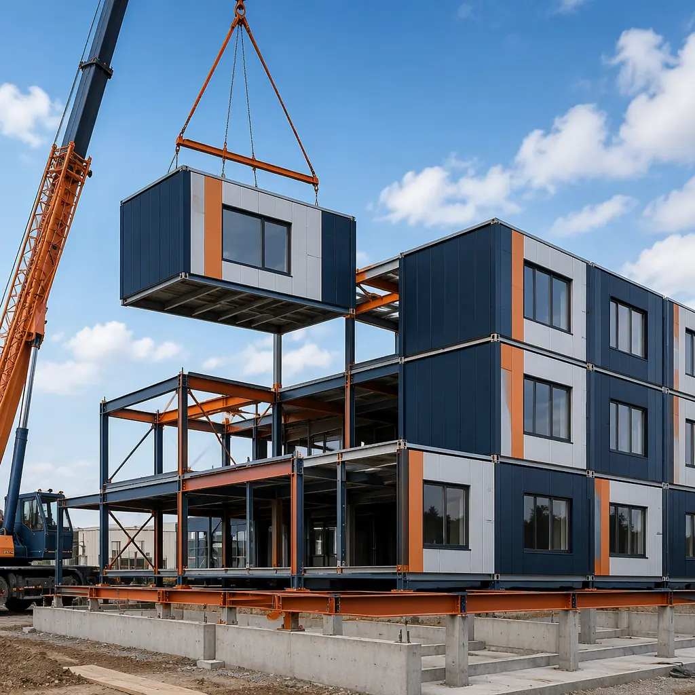
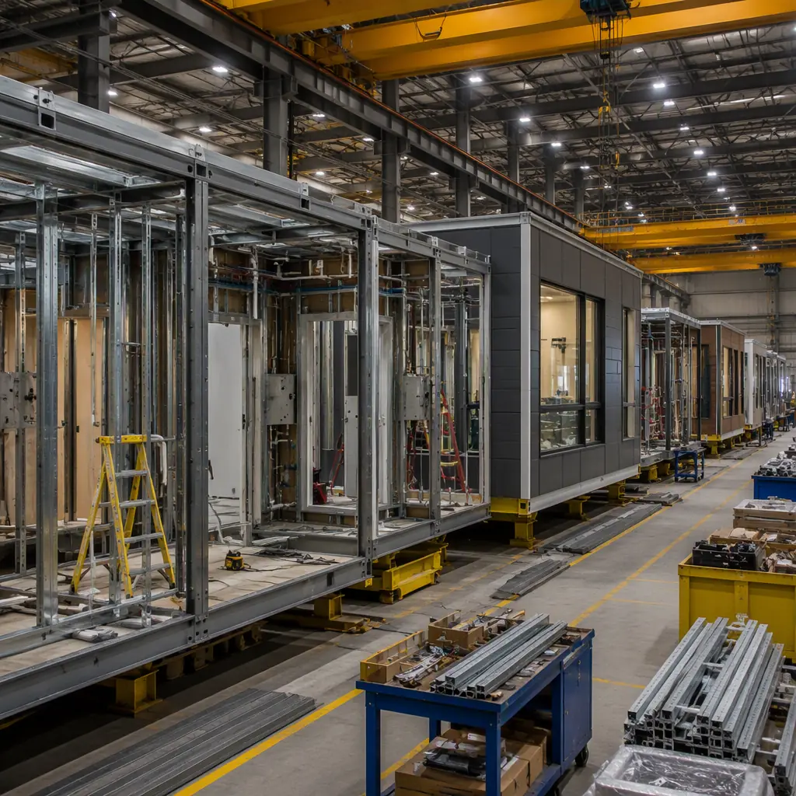
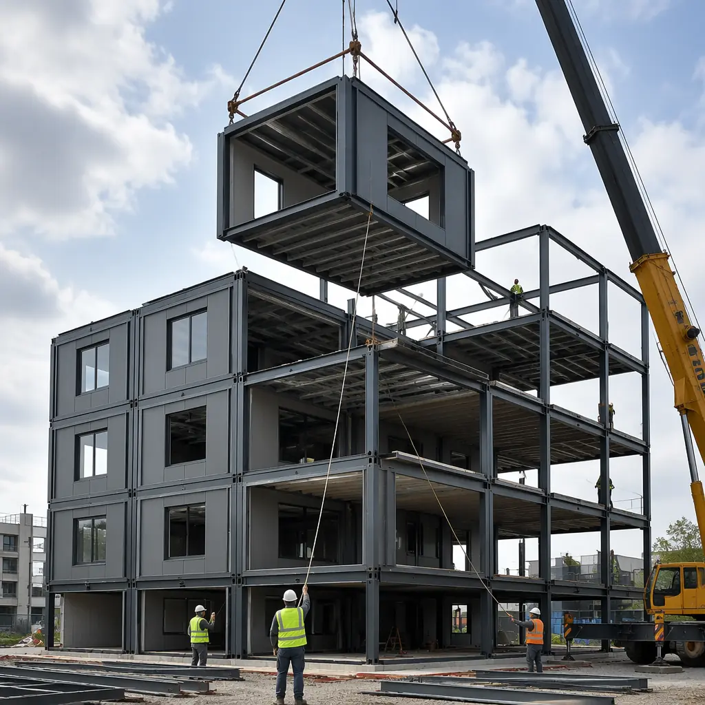
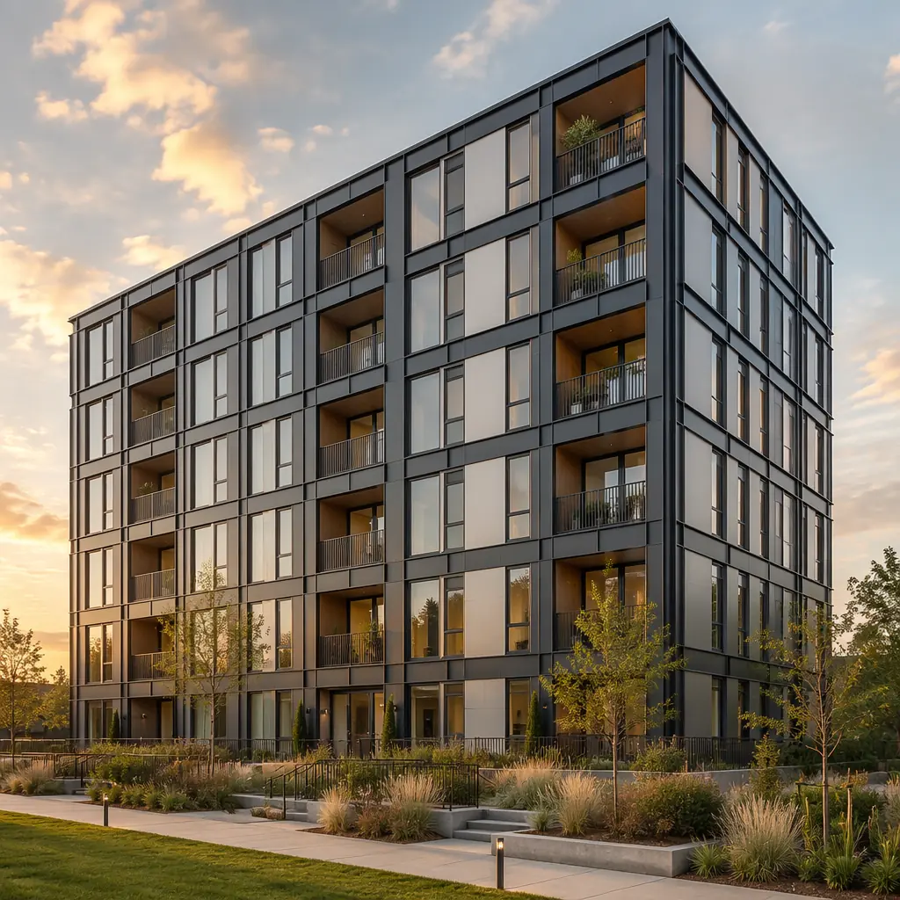
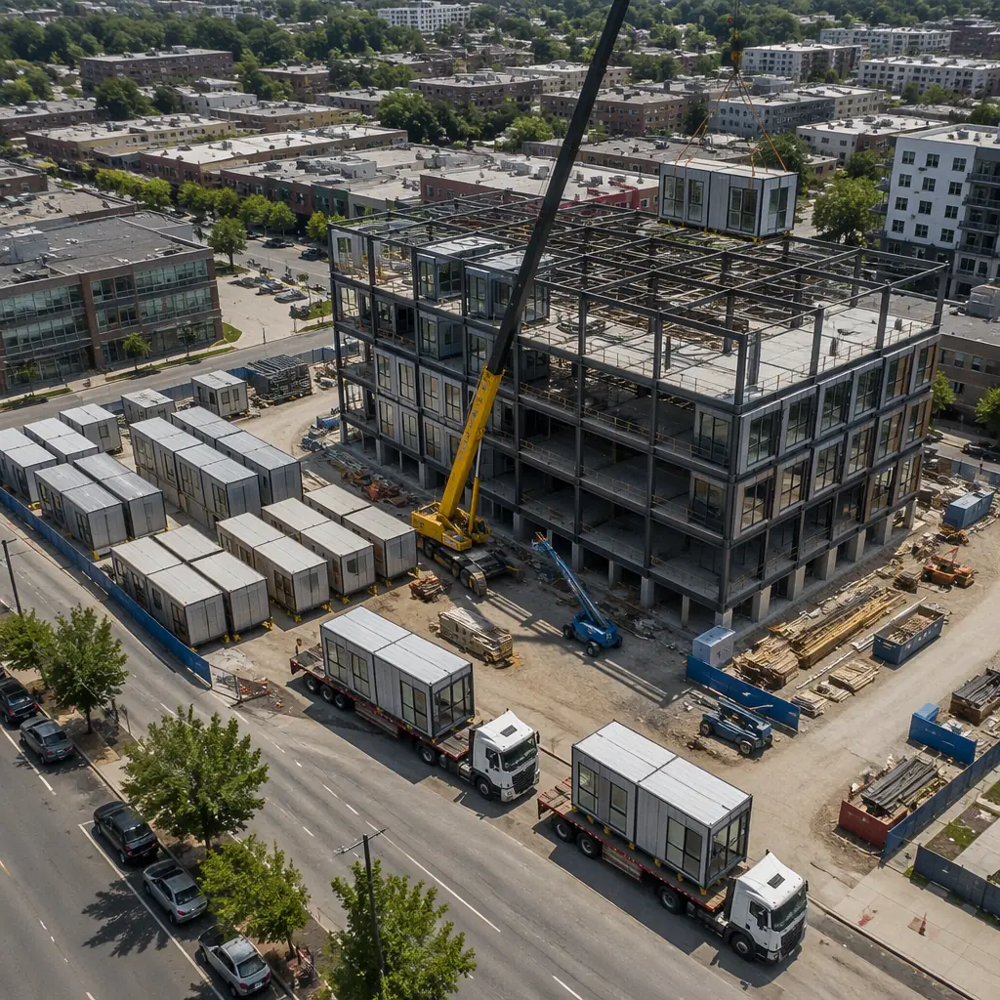

When developers search for "steel modular construction," they are not looking for a theory paper. They are asking a practical procurement question: Should I build my next project with factory-fabricated steel modules, and what does that actually mean for my budget, schedule, and risk profile? For a deeper look, our modular vs steel frame construction — s… guide covers the details. Steel modular construction — the fabrication of complete building sections with structural steel frames in a controlled factory environment, then transporting and assembling them on-site — has moved from niche alternative to mainstream procurement option. As of 2026, steel modular accounts for approximately 6.2% of new commercial construction starts in North America, up from 3.1% in 2019 (Modular Building Institute, 2026 Annual Report). For commercial developers evaluating their next project, understanding what steel modular actually delivers — and what it does not — is the difference between a 14-month faster occupancy timeline and an expensive experiment.

What Steel Modular Construction Actually Means
Steel modular construction is not shipping containers with windows. It is a manufacturing process where complete building sections — including structural steel frame, interior finishes, MEP rough-ins, windows, and exterior cladding — are fabricated inside a quality-controlled factory, transported to the site on flatbed trucks, and set onto a prepared foundation using cranes. Each module is a volumetric steel box: the structural frame is welded from hot-rolled or cold-formed steel sections (typically ASTM A500 Grade B or A992), floor decks are concrete on steel deck or steel plate, and walls are steel stud infill with factory-installed insulation, drywall, and paint.
The critical distinction from conventional steel-frame construction is process, not material. A site-built steel building and a steel modular building use the same structural steel specifications, the same fire-rated assemblies, and the same building code classification (typically IBC Type II-B). The difference is that 80-90% of the modular building's labor hours occur inside a factory under ISO 9001 quality systems, while the site-built building performs all labor exposed to weather, subcontractor variability, and the productivity losses that plague every construction site. For a detailed comparison of construction methods, see our modular vs traditional construction analysis.

Steel Modular vs. Alternative Construction Methods: Head-to-Head
Steel modular occupies a specific position in the construction method spectrum. Here is how it compares against the alternatives developers actually consider for commercial projects in 2026:
- Steel Modular vs. Site-Built Steel Frame. Same structural code classification (IBC Type II-B), same fire rating capability (1-2 hour tested assemblies), same design flexibility for custom floor plans. The difference: steel modular delivers occupancy 30-50% faster because foundation work and module fabrication occur simultaneously. Cost: steel modular runs 5-10% lower than site-built steel for projects above 20,000 sq ft due to factory labor efficiency and bulk material purchasing. Our modular vs steel frame comparison provides detailed cost line items.
- Steel Modular vs. Wood-Frame Modular. Wood-frame modular tops out at 5-6 stories under IBC. Steel modular handles 6-20 stories using the same volumetric approach. Steel modules weigh 15-25 tons each versus 8-12 tons for wood, requiring heavier crane capacity but offering superior fire resistance, longer spans (up to 40 ft clear versus 20-24 ft for wood), and zero risk of moisture entrapment during construction — a persistent issue with wood modular exposed to rain during site assembly. See our modular vs wood-frame analysis.
- Steel Modular vs. Precast Concrete. Precast concrete modular (bathroom pods, prison cells, hotel room boxes) delivers excellent acoustic separation and thermal mass but weighs 30-40 tons per module — requiring specialized transport and heavier foundations. Steel modular at 15-25 tons per module uses standard flatbed trucks and conventional spread footings. Steel also allows field modifications (cutting openings, adding penetrations) that precast concrete does not permit without diamond coring. For projects where future adaptability matters, steel modular provides significantly more flexibility. See our modular vs precast comparison for load tables.
- Steel Modular vs. PEMB (Pre-Engineered Metal Buildings). PEMBs are optimized for single-story, large-span industrial applications — warehouses, distribution centers, aircraft hangars. They use tapered rigid frames with metal panel cladding and are not designed for multi-story or finished interior spaces. Steel modular serves the mid-rise commercial market: hotels, apartments, offices, healthcare — buildings that need finished interiors, MEP distribution, and architectural facades. The comparison is less about competing and more about selecting the right tool for the building typology. Our modular vs PEMB analysis details where each method excels.

Cost Structure: What a Steel Modular Project Actually Costs in 2026
Developers evaluating steel modular construction need cost data they can plug into a pro forma. Based on MODURA's completed project data and industry benchmarks for mid-rise commercial steel modular (4-12 stories), here are the per-square-foot cost ranges for 2026:
| Cost Category | Per Sq Ft (Range) | % of Total |
|---|---|---|
| Module fabrication (steel frame + finishes + MEP rough-in) | $140–$185 | 55-60% |
| Transportation (flatbed, 300-mile radius) | $8–$14 | 3-4% |
| Crane and site setting | $10–$18 | 4-5% |
| Foundation (spread footings, grade beams) | $18–$28 | 6-9% |
| Site work, utilities, connections | $22–$35 | 8-10% |
| Design, engineering, permitting | $15–$22 | 5-7% |
| Total (excluding land and soft costs) | $213–$302 | 100% |
For reference, comparable site-built steel-frame commercial construction in major US markets runs $245-$340/sq ft. The 10-15% cost advantage for steel modular comes from three sources: factory labor productivity (roughly 2.5x site labor output per worker-hour), bulk material purchasing with predictable volumes (no over-ordering for site waste), and dramatically reduced general conditions costs (shorter site duration means less supervision, security, temporary utilities, and equipment rental). Our cost per square foot guide provides a deeper breakdown by building type.
Project Types Where Steel Modular Excels — and Where It Does Not
Steel modular construction is not a universal solution. It delivers maximum value in specific project profiles:
Best candidates for steel modular (ROI >15% vs site-built). For a deeper look, our wildfire-resistant modular construction guide covers the details. Multi-family residential (4-12 stories) where unit repetition captures factory learning-curve efficiencies; hotels and extended-stay hospitality with standardized room layouts; student housing and dormitories with strict academic calendar deadlines; healthcare facilities (medical office buildings, ambulatory surgery centers) where speed-to-revenue justifies any cost premium; and workforce housing in remote locations where site labor availability is constrained and factory fabrication eliminates weather delays.
Poor candidates for steel modular (ROI <5% vs site-built). Single-story big-box retail with 40,000+ sq ft clear spans where the module-to-space ratio is unfavorable (too many modules for the enclosed volume); buildings with highly irregular floor plans where every module is a one-off design — the factory learning curve disappears; projects in jurisdictions without modular inspection protocols where the permitting timeline eliminates schedule advantage; and small projects under 8,000 sq ft where crane mobilization costs become disproportionate. For developers uncertain about fit, our partner evaluation checklist includes a project suitability scoring system.

Steel Modular Procurement: The Developer's Step-by-Step Checklist
Procuring a steel modular building is fundamentally different from a traditional design-bid-build process. Here are the decisions and milestones that determine whether a project succeeds or stalls:
- Engage the modular manufacturer during schematic design, not after CD completion. This is the number one mistake developers make. A modular manufacturer's engineering team can optimize module dimensions for transport (maximum 15 ft 6 in width, 75 ft length in most states), identify structural connection details that reduce crane time, and value-engineer MEP routing so that module-to-module connections are plug-and-play on site. Engaging after construction documents are complete means redesigning to fit modular constraints — adding 8-12 weeks and $20,000-$40,000 in re-engineering costs.
- Verify the manufacturer's third-party inspection program. Steel modular quality depends entirely on factory process control. The manufacturer should provide: ISO 9001 certification, an active third-party inspection contract (not self-inspection), module delivery condition reports, and a documented non-conformance tracking system. Our factory QC guide lists the specific certifications and audit criteria to request.
- Lock transportation logistics before module fabrication begins. Module dimensions and weight determine route feasibility. Each state has different permit requirements, escort vehicle rules, and curfew restrictions. A route survey from a specialized modular transporter should be completed during the design phase — discovering that a bridge on the route has a 14 ft clearance after 60 modules are built is a six-figure problem.
- Secure modular-compatible financing and insurance. Standard construction loans assume monthly draw schedules based on site progress. Modular construction requires a different draw structure: a significant upfront payment for factory production (typically 30-40% of the contract), followed by module delivery milestones. Lenders unfamiliar with modular may resist this structure. MODURA's financing guide and insurance guide cover the specific loan products and coverage structures that match modular cash flow.
- Plan the site logistics for module setting day. A typical steel modular project receives 4-8 modules per day on flatbed trucks. Each module requires a staging area, a crane with adequate reach and capacity (typically 150-250 ton crawler or mobile crane for mid-rise), and a crew of 6-8 for rigging, setting, and connection. Modules must be set in a specific sequence — the structural connections between modules are sequential, and setting out of order means removing and resetting modules. Our crane logistics guide provides site layout templates for common project configurations.
Steel Modular Construction Timeline: Real Project Data
Based on MODURA's completed steel modular projects, here is a representative timeline for a 60,000 sq ft, 5-story multi-family building:
| Phase | Duration | Parallel Activity |
|---|---|---|
| Design & engineering (schematic through permit) | 10-14 weeks | Site due diligence, financing |
| Foundation & site utilities | 10-12 weeks | Module fabrication (factory) |
| Module delivery & setting | 4-6 weeks | Module-to-module MEP connections |
| Site finishing (corridors, lobby, elevator, exterior) | 8-10 weeks | Commissioning, punch list |
| Total (foundation start to occupancy) | 22-28 weeks | vs. 48-56 weeks site-built |
The 22-28 week total is not theoretical — it is the actual range across MODURA's 2024-2026 steel modular multi-family projects. The 50% schedule compression comes entirely from parallelizing foundation work and module fabrication. This schedule advantage is worth approximately $450,000-$680,000 in accelerated revenue for a 60-unit building at $1,800/month average rent. Our project timeline guide breaks down schedules by building type and size.

The Bottom Line: Is Steel Modular Right for Your Next Project?
Steel modular construction is not a future technology — it is a procurement decision available today that delivers verified schedule compression, cost predictability, and quality consistency for the right project profiles. A 60,000 sq ft multi-family or hospitality project with moderate unit repetition can realistically achieve 50% faster occupancy, 10-15% lower total project cost, and a construction defect rate below 0.5% versus the 2-3% typical of site-built commercial construction.
The decision hinges on three factors: project typology fit (multi-family, hospitality, healthcare, and education are the strongest candidates), manufacturer capability (ISO 9001-certified, 100+ completed projects, audited QC program), and developer readiness to adapt procurement processes to the modular model. Developers who engage modular manufacturers during schematic design, structure financing for factory production milestones, and plan transportation logistics before module fabrication begins are the ones who capture the full 50% schedule advantage. Those who treat modular as a late-stage substitution for site-built construction leave most of that value on the table.